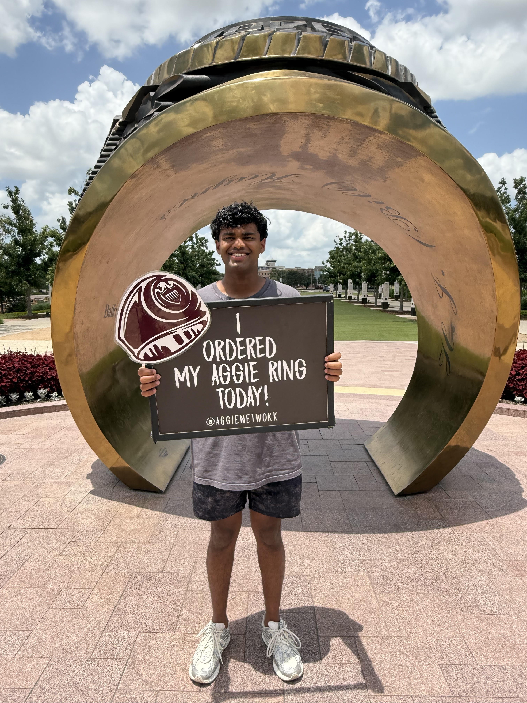

Zachary George
Computer Science @ Texas A&M | Mentorship & Service
Welcome
I'm Zachary George, a Texas A&M University computer science student who enjoys building practical software and computer-vision prototypes. I care about clear communication, shipping reliable code, and contributing to teams that serve real people. On this site you'll find selected projects, my resume and technical skills, and ways I give back through mentorship.
